Vertical Farming Interactive Installation
An interactive installation exploring the future of autonomous food production — combining physical model-making, motion graphics, UI design, and Arduino-powered interaction.

Context
With a host of new technologies challenging the boundaries of space, time, and connectedness — what does "off-the-grid" living look like today? How can we use readily available tools and technology to become self-sufficient? How do spaces and products create micro-zones that are distinct and protected from hostile environments?
The theme was autonomous living in the digital age: how can we explore our autonomy, and how can technology define what the future looks like?
Understanding
The theme was intentionally broad and abstract. When asked "What is most important for living autonomously?", there are countless answers — but the starting point that resonated most was the most fundamental: food and water. These are what we need for survival, and food became the direction for further exploration.
From there, ideation expanded outward — food, water, agriculture, food processing, food waste, food production. After conducting research, food production was confirmed as the direction. The key question became: how can food relate to autonomy?
UX Research
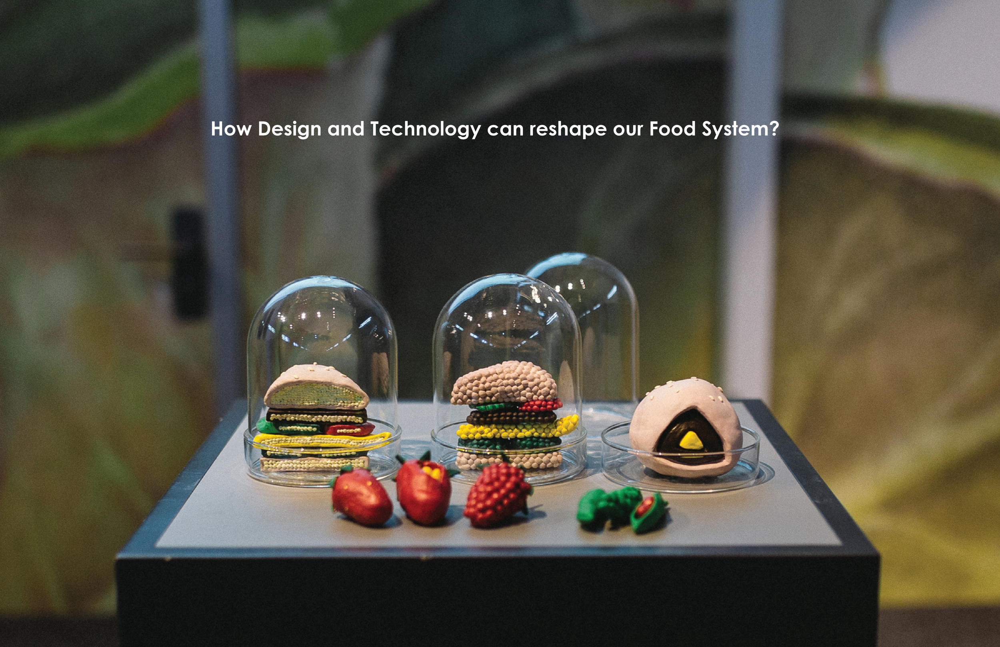
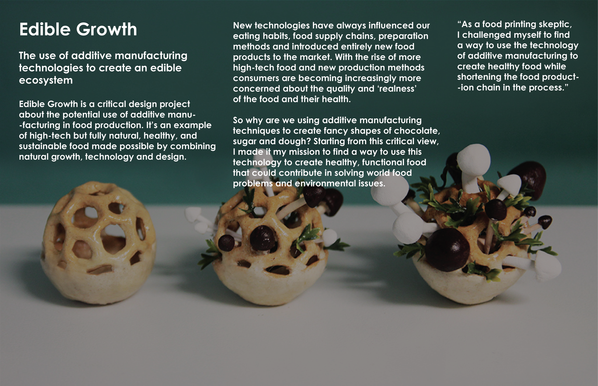
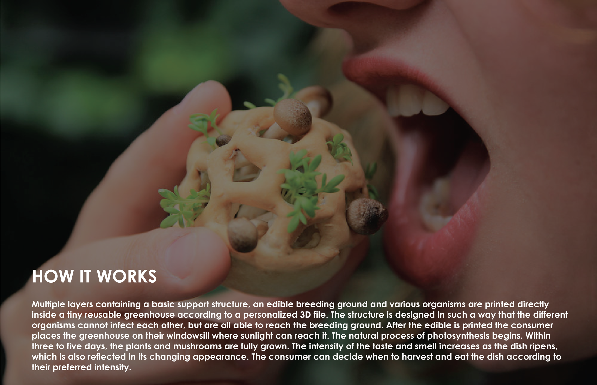
Edible Growth was a particularly inspiring reference — it combines DIY culture, technology, and health-conscious thinking. It reduces carbon footprint, rapidly cuts food waste, and returns to basics by enabling people to grow their own food through fermentation and photosynthesis. Most importantly, it creates the opportunity for genuine self-sufficiency and creativity.
How Might We
How might we change the way we produce and consume food?
This became the central question guiding the project — leading to the exploration of alternative models for future food production and consumption. Vertical Farming emerged as the concept: a small-scale interactive installation that tells food-related stories and creates a playful, meaningful interaction.
Intro
Vertical Farming is an interactive installation created, developed, and built by our team. It visualizes how future vertical farming could transform the way humans produce and consume food in the digital age.
Users open the doors and windows on each level of the installation, triggering corresponding motion graphics on a screen — each containing unique stories, information, and planting tips for different crops. Opening a door also activates tiny LED lights inside each level, allowing users to see the real plants within.
Concept
In the future, a building can serve not only as a living space, but also as a farming space — enabling a higher level of autonomous living. Vertical farming combines a unique lifestyle with a controlled, building-integrated system of food production.
This model benefits both consumers and producers. Residents of the building can grow and consume their own food simultaneously, reaching a meaningful level of self-sufficiency. It also addresses space constraints and the threat of deforestation — vertical farming could be one of humanity's most practical answers to future food challenges.
Logo
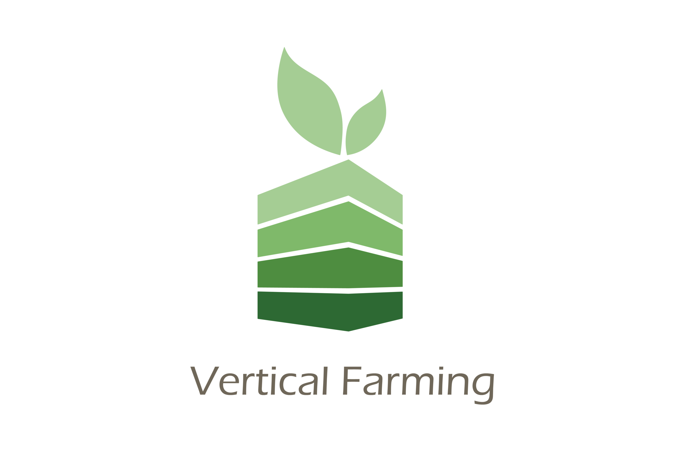
Six Chapters of Vertical Farming
Each level of the installation represents a different crop and a distinct chapter of the vertical farming story:
Spinach — Exchange the Crops in the Shop
A newcomer joins the tower and is assigned crops to grow. They exchange their harvest in the communal shop on the first level, which also houses retail space for residents.
Blueberries — Food Processing Lab
Excess or large yields of raw crops are sent to the building's food processing lab. Occupants can request processed goods — such as blueberry jam or dried blueberries — through an exchange system.
Small Mushrooms — Recycle Waste or Energy Source
The building's compostable waste is converted into nutrients for vertical farming and recycled as an energy source for the building itself.
Basil — Hydroponics & Aeroponics
This level represents the technical foundation of vertical farming: hydroponics (growing crops without soil) and aeroponics (growing crops without soil, with minimal water).
Micro-Greens / Sprouts — A Healthy Community
Occupants encounter challenges while growing and harvesting. Sharing knowledge and experiences builds a healthy, collaborative community within the building.
Cherry Tomatoes — Solar and Wind Power
As a symbol of photosynthesis, cherry tomatoes represent the use of solar and wind energy collected at the top of the building to power the entire vertical farming system sustainably.
Brochure Design
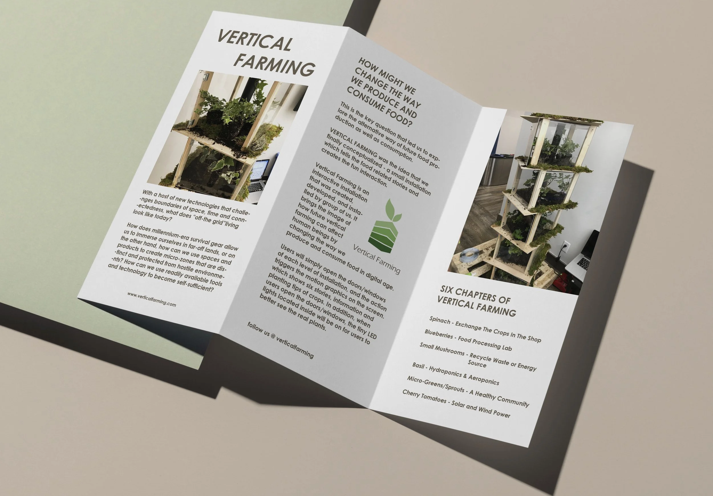
Motion Graphics
Delivering thoughtful, story-driven content was central to this project. Extensive research was conducted on crops and plants suited to a controlled building environment — covering growth requirements, conditions, and food production potential. Six stories were created based on this research and speculative future possibilities.
Each story was illustrated as a motion graphic, designed to create a visually clear and engaging experience for users. The motion graphics loop continuously during the exhibition, and opening a door at each level triggers the corresponding story on the screen beside the installation.
The Process of Designing & Building the Physical Model
The process of designing and constructing the model was complex and iterative. A significant amount of time was spent refining the concept to ensure it was both achievable and clearly communicated the theme of autonomous living through a vertical building where people could grow and consume crops.
The process began with a 3D model built in Autodesk Maya to establish a visual direction for the final structure. From there, a small-scale cardboard prototype was built to determine the actual dimensions — height and width — of each level.
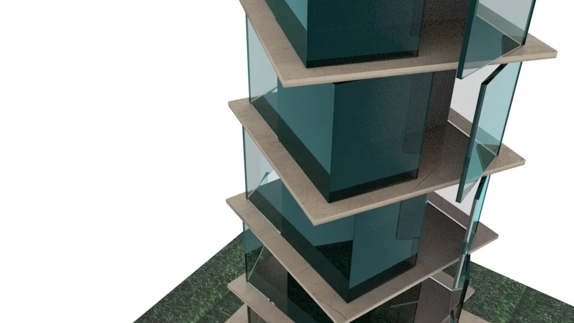
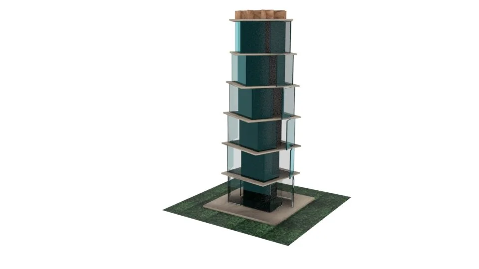
The 3D Model — Made in Autodesk Maya
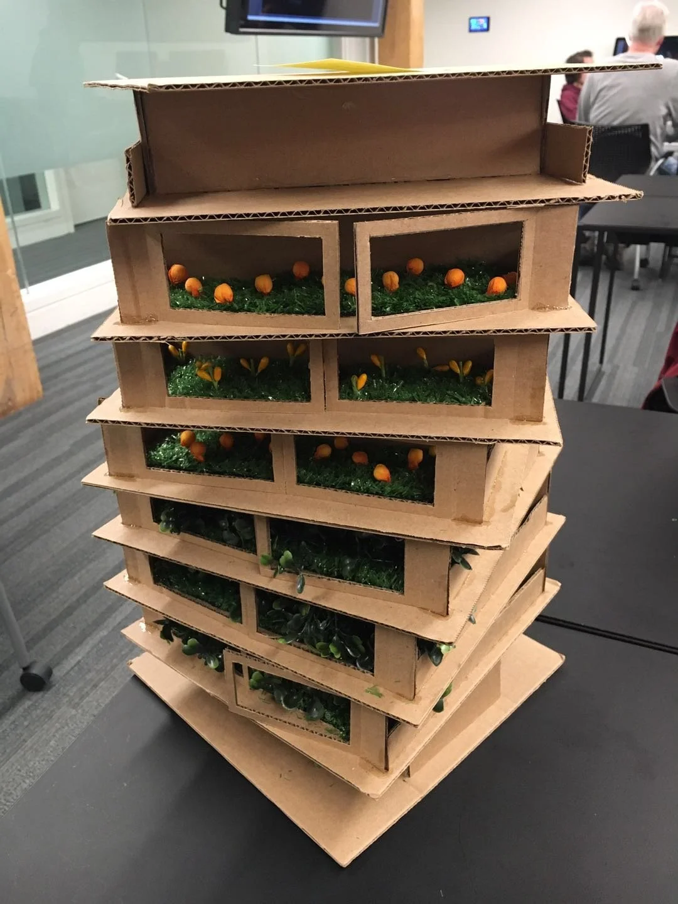
The Physical Cardboard Model — measuring, cutting, and assembling all pieces, with each level slightly twisted for visual interest
The main materials for the final model were wood sticks at the four corners to support each level, plywood for the bases, and acrylic glass for the doors and windows. Determining the precise dimensions for each piece took considerable time. The installation was ultimately built to human height — roughly the scale of a real floor.
The most difficult part was cutting the plywood and acrylic glass by hand. The materials didn't come pre-cut to the required dimensions, so my partner and I had to cut every single piece manually. Cutting alone took weeks — followed by screwing and assembling each component together.
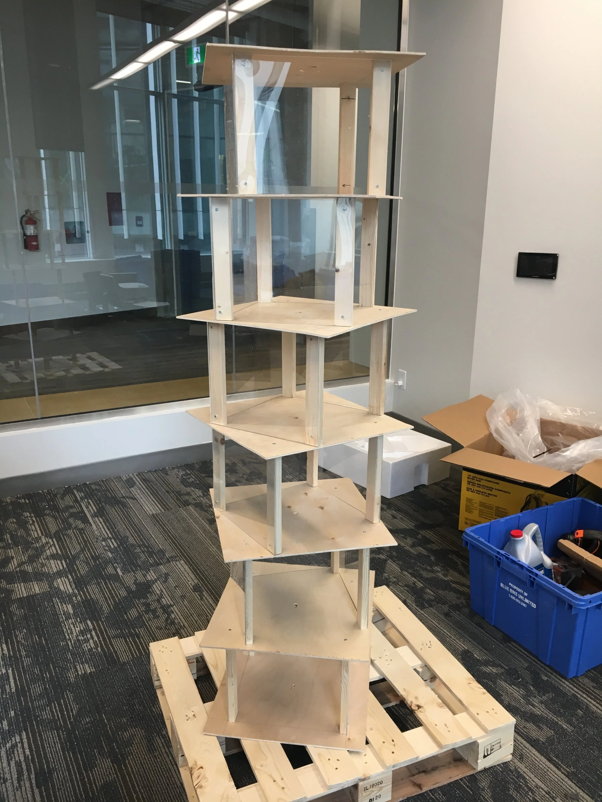
The Physical Plywood Model — wood sticks, plywood pieces, and acrylic glass windows all cut and assembled by hand
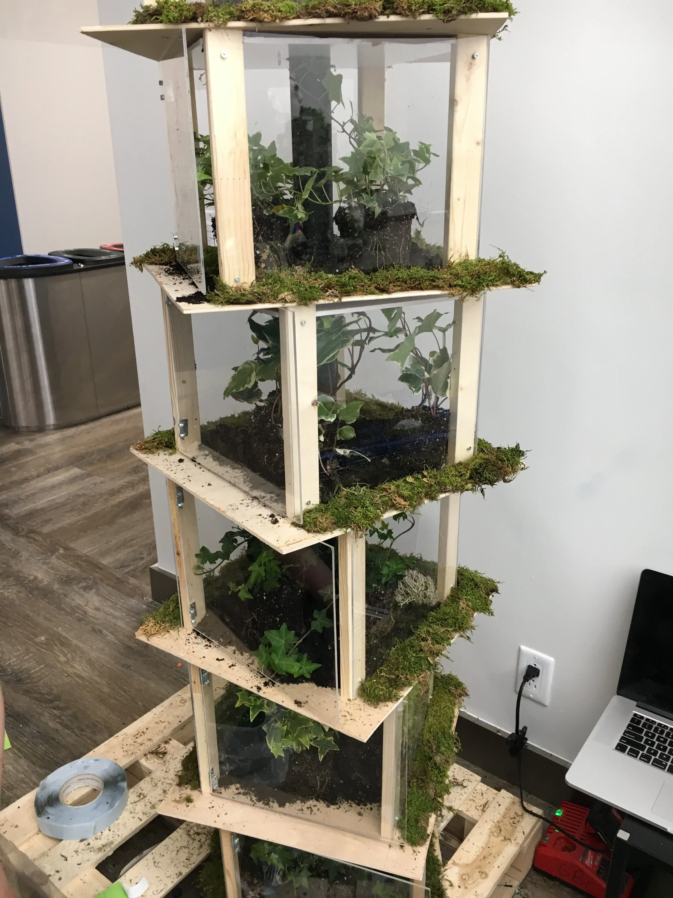
The Final Installation — drilling holes through each plywood board, running wiring from bottom to top, gluing grass along the edges, installing LED lights, and placing real soil and plants inside each level
Challenges
Developing this interactive installation involved significant technical challenges throughout. One of the biggest was getting Arduino to communicate with Processing. My partner led the coding work — building logic in Arduino and importing it into Processing — which proved to be particularly tricky. We encountered many failures along the way, but with support from instructors, we were ultimately able to get the system working reliably.
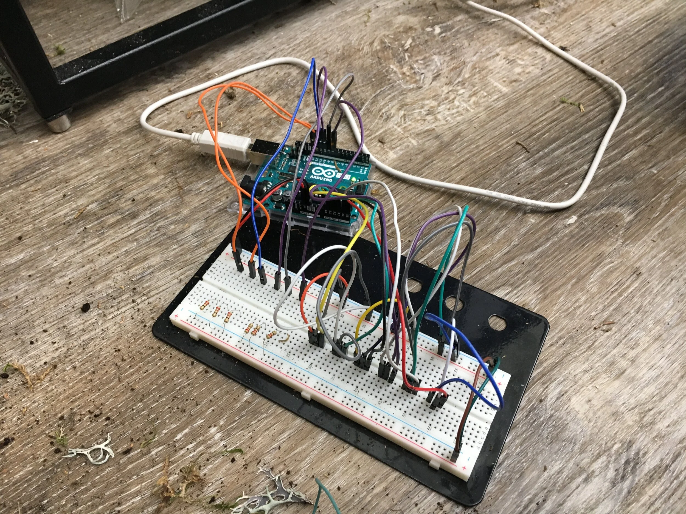
The Final Interactive Installation
Users open the doors and windows at each level of the installation, triggering the corresponding motion graphic on the adjacent screen. Each story loops continuously when users are not interacting with the installation. One door must be closed before opening another — keeping each interaction focused and intentional.
The Vertical Farming installation was selected to be exhibited at the George Brown College 2019 "Next" Year End Show.
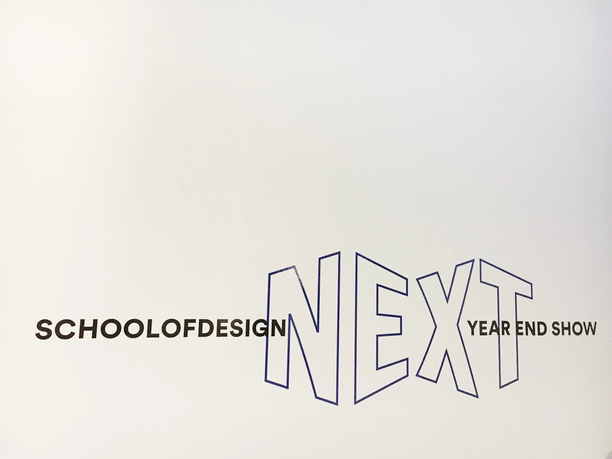
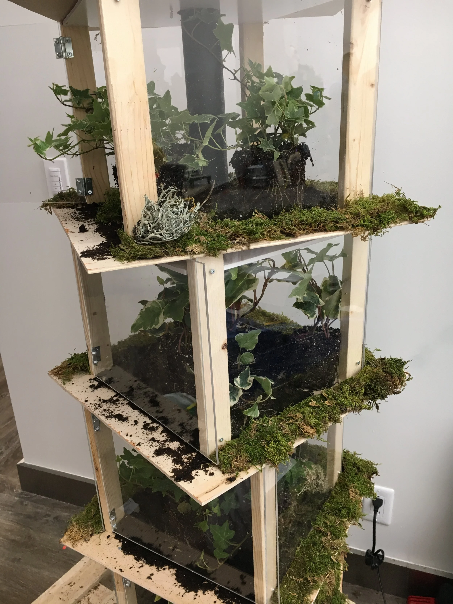
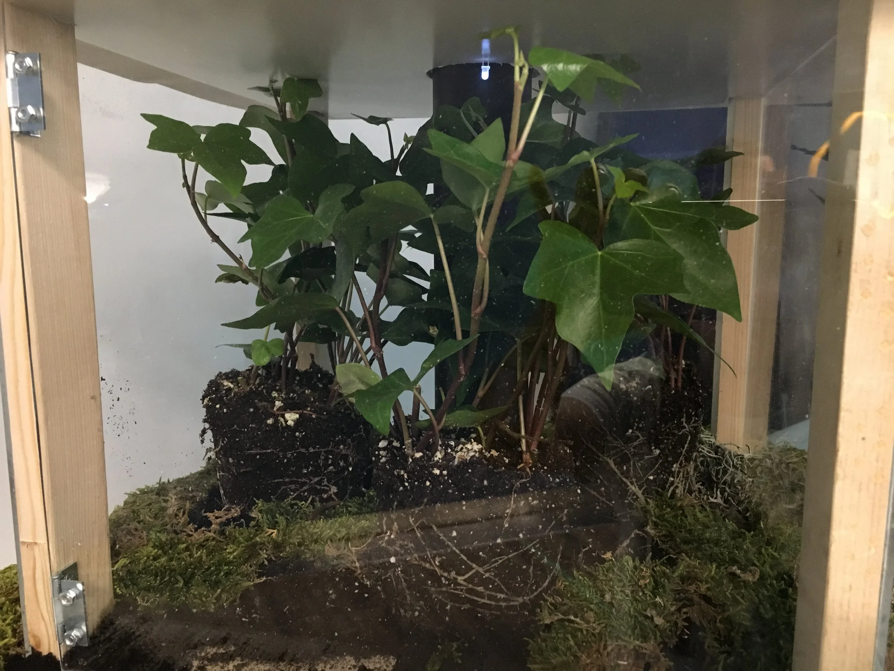
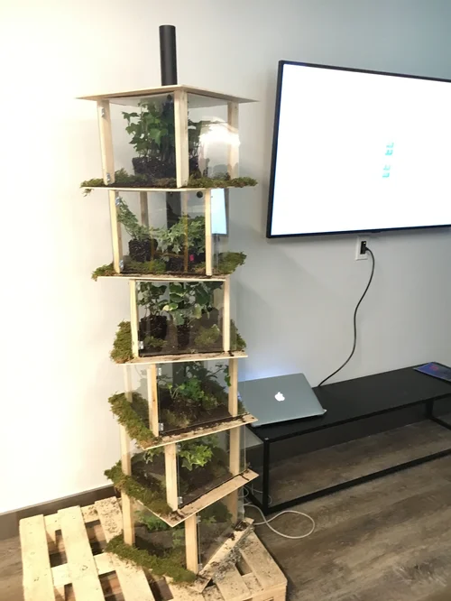
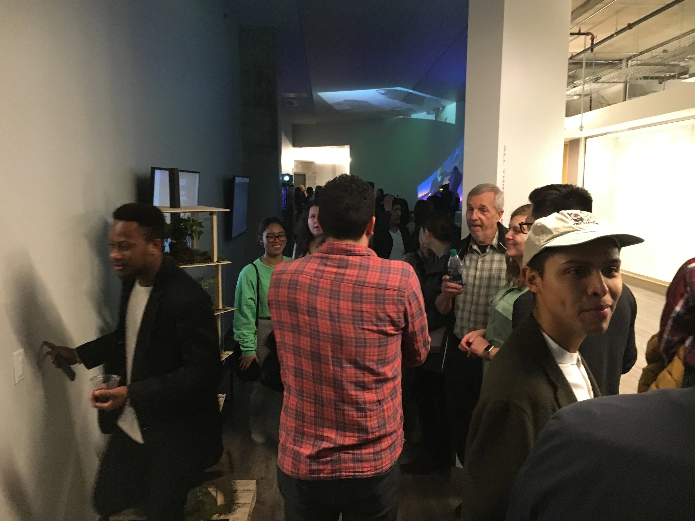
Outcomes
This project required sustained critical thinking about what autonomous living could realistically look like — and then making those ideas tangible for an audience. Once the scope was defined, challenges emerged at every stage:
- Content and narrative — how to tell six distinct stories in a way that was meaningful, cohesive, and easy to understand
- Physical construction — every detail mattered, down to the smallest screw
- Technical integration — coding, Arduino, Processing, and extensive wiring all had to work together seamlessly
- Hands-on problem solving — acrylic glass cracked during drilling, materials were wasted due to mistakes, and solutions had to be found in real time
The entire process was nonstop problem solving. Looking back, it's remarkable that we completed it within the given timeframe. That resilience — and the ability to keep moving forward under pressure — was the most valuable part of the experience.
The installation was 100% handmade: every piece cut, assembled, wired, and planted by hand. That effort earned its reward — Vertical Farming was exhibited at the 2019 George Brown College School of Design NEXT Year End Show.